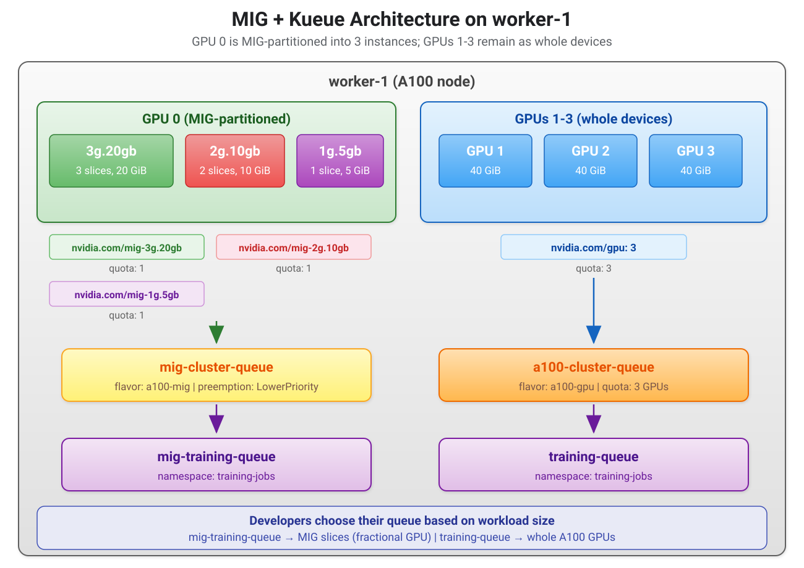

Create Kueue MIG Resources
With MIG resources visible on the node, you now create the Kueue resources to manage them: update the existing A100 ClusterQueue quota, then create a new ResourceFlavor, ClusterQueue, and LocalQueue for MIG instances.
Lab: Configure Kueue for MIG
1. Update the A100 ClusterQueue quota
Since GPU 0 is now MIG-partitioned, worker-1 only has 3 whole GPUs instead of 4.
Update the a100-cluster-queue to reflect this:
$ oc patch clusterqueue a100-cluster-queue --type merge \
-p '{"spec":{"resourceGroups":[{"coveredResources":["cpu","memory","nvidia.com/gpu"],"flavors":[{"name":"a100-gpu","resources":[{"name":"cpu","nominalQuota":"16"},{"name":"memory","nominalQuota":"64Gi"},{"name":"nvidia.com/gpu","nominalQuota":"3"}]}]}]}}'
clusterqueue.kueue.x-k8s.io/a100-cluster-queue patchedVerify:
$ oc describe clusterqueue a100-cluster-queue | grep -A 5 "nvidia.com/gpu"
nvidia.com/gpu
Flavors:
Name: a100-gpu
Resources:
Name: cpu
Nominal Quota: 16
--
Name: nvidia.com/gpu
Nominal Quota: 3
Stop Policy: None
...The GPU nominal quota should now show 3 instead of 4.
2. Create MIG ResourceFlavor
Create a ResourceFlavor for MIG instances.
It targets the same physical node as a100-gpu (same nodeLabels and tolerations), but Kueue uses it for MIG resource types.
Review kueue-config/6-mig-resource-flavors.yaml before applying:
apiVersion: kueue.x-k8s.io/v1beta2
kind: ResourceFlavor
metadata:
name: a100-mig (1)
spec:
nodeLabels:
nvidia.com/gpu.product: NVIDIA-A100-SXM4-40GB (2)
tolerations:
- key: "nvidia.com/gpu" (3)
operator: "Exists"
effect: "NoSchedule"| 1 | The flavor name a100-mig distinguishes it from the a100-gpu flavor used for whole GPUs. ClusterQueues reference this name. |
| 2 | Same nodeLabel as the a100-gpu flavor — both target the same physical A100 node. The difference is in which resource types the ClusterQueue covers, not node selection. |
| 3 | The toleration allows MIG workloads to schedule on GPU-tainted nodes. |
$ oc apply -f kueue-config/6-mig-resource-flavors.yaml
resourceflavor.kueue.x-k8s.io/a100-mig createdVerify:
$ oc get resourceflavors
NAME AGE
a100-gpu 24h
a100-mig 15s
default-flavor 28h
nvidia-gpu-flavor 28h
t4-gpu 24h|
You should see five flavors. The |
3. Create MIG ClusterQueue
Review kueue-config/7-mig-cluster-queue.yaml before applying:
apiVersion: kueue.x-k8s.io/v1beta2
kind: ClusterQueue
metadata:
name: mig-cluster-queue
spec:
namespaceSelector: {}
preemption:
withinClusterQueue: LowerPriority (1)
resourceGroups:
- coveredResources: ["cpu", "memory", (2)
"nvidia.com/mig-3g.20gb",
"nvidia.com/mig-2g.10gb",
"nvidia.com/mig-1g.5gb"]
flavors:
- name: a100-mig (3)
resources:
- name: cpu
nominalQuota: 8
- name: memory
nominalQuota: 32Gi
- name: nvidia.com/mig-3g.20gb (4)
nominalQuota: 1
- name: nvidia.com/mig-2g.10gb
nominalQuota: 1
- name: nvidia.com/mig-1g.5gb
nominalQuota: 1| 1 | LowerPriority preemption allows high-priority jobs to evict low-priority ones within the same ClusterQueue (exercised in the next section). |
| 2 | Each MIG profile is listed as a separate covered resource. Kueue tracks and admits them independently — a job requesting mig-3g.20gb does not consume mig-1g.5gb quota. |
| 3 | References the a100-mig ResourceFlavor created in step 2. |
| 4 | Each MIG quota is set to 1, matching exactly what the MIG partition produces. If you partitioned GPU 0 differently, adjust these quotas to match. |
$ oc apply -f kueue-config/7-mig-cluster-queue.yaml
clusterqueue.kueue.x-k8s.io/mig-cluster-queue createdThis creates:
| ClusterQueue | Flavor | MIG Quotas | Preemption |
|---|---|---|---|
|
|
1x |
LowerPriority |
The quotas match exactly what the MIG partition produces. Each MIG resource type is listed as a separate covered resource so Kueue can track and admit them independently.
Verify:
$ oc get clusterqueue -o wide
NAME COHORT STRATEGY PENDING WORKLOADS ADMITTED WORKLOADS
a100-cluster-queue BestEffortFIFO 0 0
default BestEffortFIFO 0 0
mig-cluster-queue BestEffortFIFO 0 0
t4-cluster-queue BestEffortFIFO 0 0| For more detailed configuration you can also run oc describe clusterqueue mig-cluster-queue. |
4. Create MIG LocalQueue
Review kueue-config/8-mig-local-queue.yaml before applying:
apiVersion: kueue.x-k8s.io/v1beta2
kind: LocalQueue
metadata:
name: mig-training-queue (1)
namespace: training-jobs (2)
spec:
clusterQueue: mig-cluster-queue (3)| 1 | A descriptive name that developers use in their Job’s kueue.x-k8s.io/queue-name label. |
| 2 | Scoped to the training-jobs namespace. Jobs in other namespaces cannot submit to this queue. |
| 3 | Points to the MIG ClusterQueue created in step 3. Kueue checks MIG quotas when admitting workloads from this queue. |
$ oc apply -f kueue-config/8-mig-local-queue.yaml
localqueue.kueue.x-k8s.io/mig-training-queue createdThis creates:
| LocalQueue | Namespace | Backing ClusterQueue |
|---|---|---|
|
|
|
Training jobs can now submit to either training-queue (whole A100 GPUs) or mig-training-queue (MIG instances) depending on how much GPU they need.
Verify:
$ oc get localqueues -n training-jobs
NAME CLUSTERQUEUE PENDING WORKLOADS ADMITTED WORKLOADS
default default 0 0
mig-training-queue mig-cluster-queue 0 0
training-queue a100-cluster-queue 0 0You should see three LocalQueues: The unused default queue, training-queue and mig-training-queue.
5. Verify the full MIG + Kueue configuration
Check that everything is wired up:
Node resources should show both whole GPUs and MIG instances:
$ oc get node $WORKER_NODE1 -o jsonpath='{.status.allocatable}' | python3 -m json.tool | grep -E 'gpu|mig'All ResourceFlavors should include a100-gpu, t4-gpu, and a100-mig:
$ oc get resourceflavorsAll ClusterQueues should be active:
$ oc get clusterqueuesThe A100 queue should show 3 GPUs (not 4):
$ oc describe clusterqueue a100-cluster-queue | grep -A 3 "nvidia.com/gpu"The MIG queue should show 1 of each MIG profile:
$ oc describe clusterqueue mig-cluster-queueLocalQueues in training-jobs should show training-queue and mig-training-queue:
$ oc get localqueues -n training-jobsMIG Architecture Summary
After completing the MIG configuration, worker-1 now serves two types of GPU workloads through separate Kueue pipelines.
GPU 0 is MIG-partitioned into three isolated instances, each managed by mig-cluster-queue through the a100-mig flavor.
GPUs 1-3 remain as whole devices, managed by a100-cluster-queue through the a100-gpu flavor.
Both pipelines feed into the training-jobs namespace, so developers choose their queue based on workload size.

MIG Configuration Summary
| File | Resources | Scope |
|---|---|---|
|
MIG labels + partition annotation on worker-1 |
Node |
|
Topology ConfigMap with MIG profiles as |
Namespace ( |
|
|
Cluster |
|
|
Cluster |
|
|
Namespace |